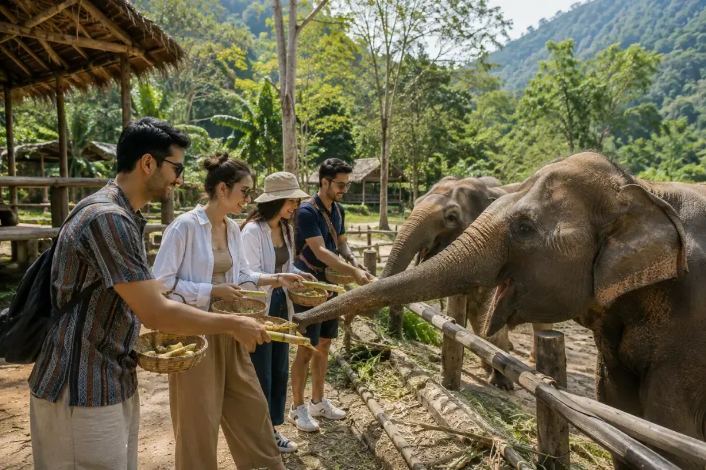
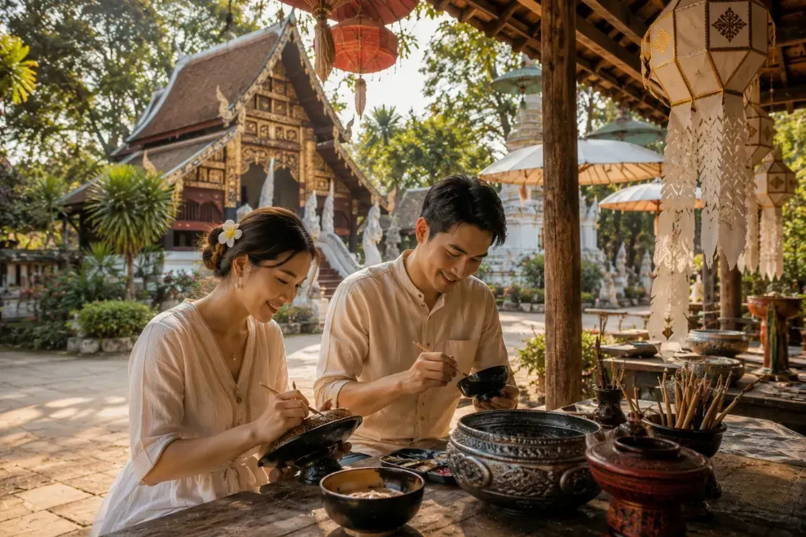
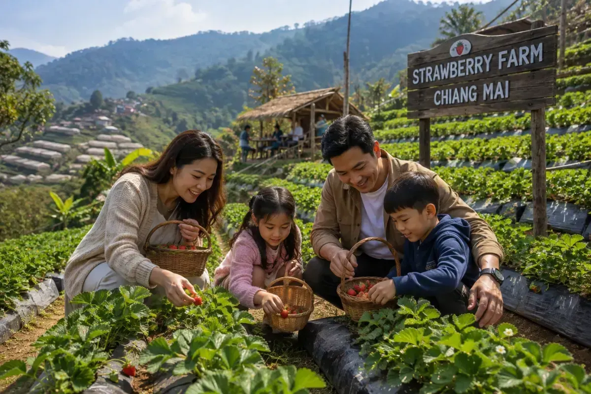
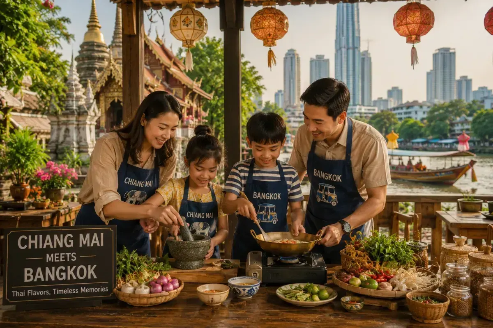
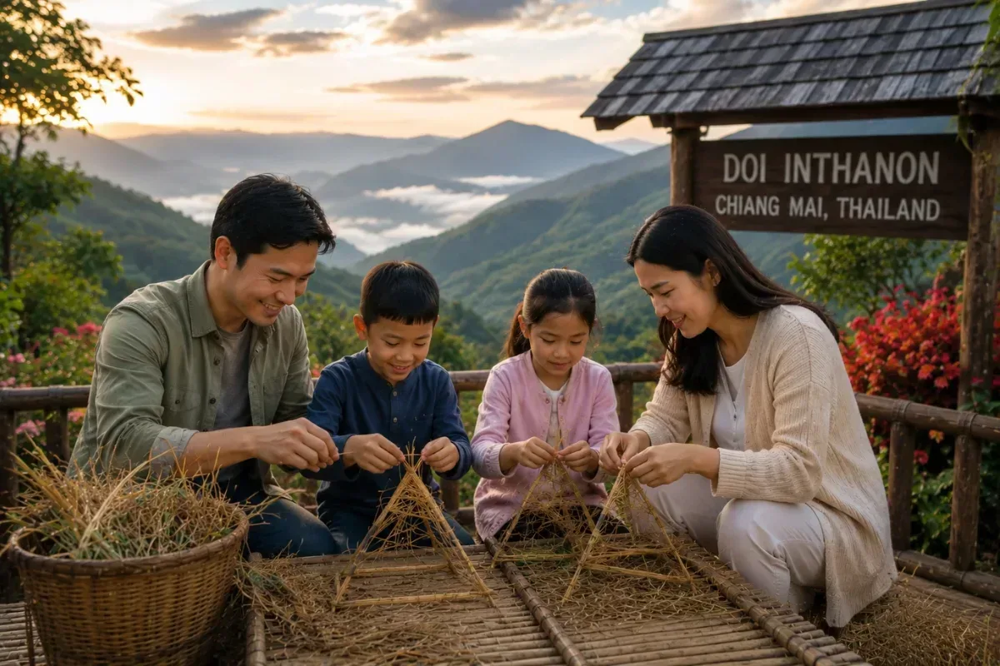
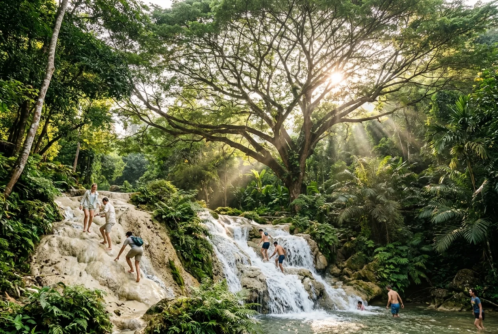
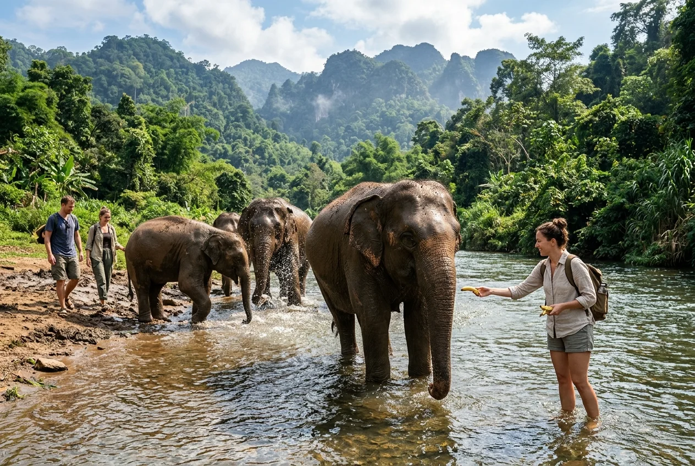
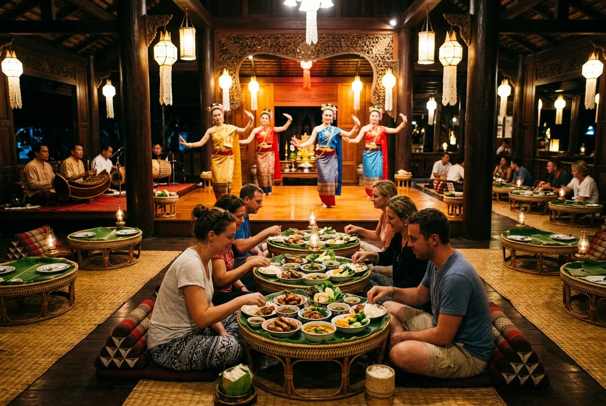
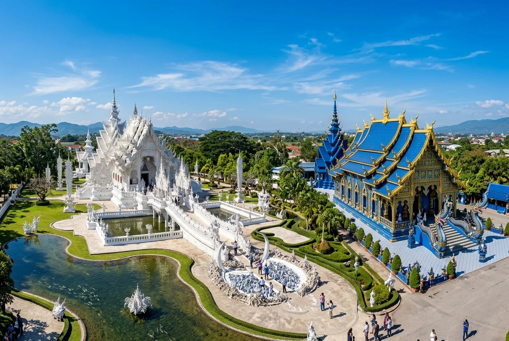

Explore Chiang Mai Packages
Handcrafted itineraries & cultural highland escapes in Chiang Mai
Chiang Mai Tour Packages
Handcrafted itineraries for an unforgettable vacation

🔥 PopularBreathtaking Northern Thailand Expedition
Embark on an unforgettable journey through Northern Thailand, where ancient temples, ethical wildlife experiences, majestic mountains, and rich cultural heritage come together to create the perfect escape.

🔥 PopularCharming Chiang Mai Cultural Retreat
Discover the cultural heart of Northern Thailand through ancient temples, ethical elephant encounters, local art, authentic cuisine, and vibrant markets in the charming city of Chiang Mai.

🔥 PopularEnchanting Chiang Mai Highland Escape
Experience the perfect blend of culture, nature, and adventure as you explore Chiang Mai's ancient temples, ethical elephant sanctuary, majestic mountains, cascading waterfalls, and vibrant café culture.

🔥 PopularMagnificent Northern & Bangkok Fusion
Experience the perfect blend of Northern Thailand's cultural heritage and Bangkok's modern attractions, featuring ancient temples, ethical wildlife encounters, world-famous landmarks, and exciting family-friendly experiences.

🔥 PopularScenic Northern Thailand Journey
Discover the cultural heritage, artistic landmarks, and natural beauty of Northern Thailand as you explore the charming cities of Chiang Mai and Chiang Rai through unforgettable experiences.
Explore More Chiang Mai Packages
Looking for a personalized Chiang Mai trip? Get in touch with our travel specialists to craft a custom itinerary tailored to your preferences, schedule, and budget.
Sightseeing Options in Chiang Mai
Discover top Chiang Mai sightseeing tours, ethical elephant sanctuaries, waterfalls & cultural experiences
 🔥 Highest Peak
🔥 Highest Peak
Doi Inthanon National Park Tour
Highlights: Thailand's Highest Peak (2,565m) • Twin Royal Pagodas • Wachirathan Waterfall • Ang Ka Trail • Mae Klang Market

🌊 Natural WonderGiant Rain Tree & Sticky Waterfall Tour
Highlights: Centuries-Old Giant Rain Tree • Sticky Waterfall (Bua Tong) Climb • Scenic Riverboat Ride • The Garden's House

🐘 Ethical CareKerchor Elephant Eco Park Tour
Highlights: Rescued Elephants (No Riding) • Herbal Vitamin Workshop • Forest Walk • River Bathing • Mud Spa & Thai Meal

🎭 Cultural FeastKhantoke Dinner & Cultural Show
Highlights: Traditional Lanna Khantoke Feast • Classical Thai Dances • Sword & Candle Dance • Live Folk Music • Teakwood Hall

✨ Iconic TemplesWhite & Blue Temple Cultural Tour
Highlights: Wat Rong Khun (White Temple) • Wat Rong Suea Ten (Blue Temple) • Mae Kachan Hot Springs • Lalitta Café • Thai Lunch
EXPLORE MORE OPTIONS OF SIGHTSEEING OF CHIANG MAI
Discover more sightseeing experiences, mountain excursions, ethical wildlife tours, and cultural workshops in Chiang Mai.
Frequently Asked Questions About Chiang Mai Tours
Quick facts on highland sightseeing, elephant care, mountain trips, and transfers
What are the top sightseeing tours in Chiang Mai?
The top sightseeing tours in Chiang Mai include full-day excursions to Doi Inthanon National Park (Thailand's highest peak at 2,565m), ethical elephant interactions at Kerchor Elephant Eco Park, climbing the unique non-slip Sticky Waterfall (Bua Tong), visiting the White & Blue Temples, and experiencing a traditional Khantoke Dinner with live Lanna cultural dancing.
Are the elephant tours in Chiang Mai ethical?
Yes. Trippovention exclusively partners with ethical, cruelty-free sanctuaries like Kerchor Elephant Eco Park, where no riding or performance hooks are permitted. Rescued elephants roam freely in expansive forested hillsides, and visitors can ethically feed, walk alongside, and bathe with them in natural mountain streams.
How does Sticky Waterfall (Bua Tong) work and can anyone climb it?
Sticky Waterfall (Bua Tong Waterfall) has calcium carbonate mineral deposits that coat the limestone rocks with a unique traction surface similar to a firm sponge. This non-slip texture allows visitors of all ages to walk and climb straight up the cascading water barefoot without slipping.
Can I visit the White and Blue Temples on a day trip from Chiang Mai?
Yes, our White & Blue Temple Full-Day Cultural Tour departs Chiang Mai daily around 07:00 AM, taking you across scenic mountain passes with stops at Mae Kachan Hot Springs, Wat Rong Khun (White Temple), Wat Rong Suea Ten (Blue Temple), and Lalitta Café, returning comfortably by evening.
Plan Your Trip to Chiang Mai
Get in touch with our Thailand travel experts for customized holiday packages